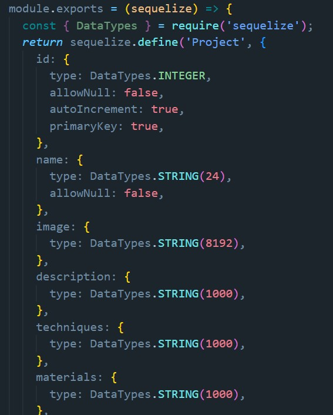

Stack
Päädyimme mukautettuun MEAN-stack-ratkaisuun. Käytimme Node.js:ää, SQL-tietokantaa ja Angularia. Lisäksi otimme myöhemmin käyttöön AWS:n Elastic Beanstalkin.
Itse halusin ottaa käyttöön jonkin työkalun, jota ei ollut käytetty kursseilla, joten otin mukaan kehitykseen Sequelizen. Uuden opettelun lisäksi halusin hieman helpottaa omaa elämääni, koska projektissa oli vain neljä jäsentä.
Sequelize
Halusin tosiaan kokeilla ORM-työkalun käyttöä MySQL:n kanssa, joten projektin alussa käytin hieman aikaa eri vaihtoehtojen tutkimiseen. Sequelize vaikutti parhaalta vaihtoehdolta projektiimme. Vaikka monien mielestä sen dokumentaatio on ilmeisesti vähän vaikeaselkoinen, omasta mielestäni dokumentiaatiosta oli paljon apua.
Jälkeenpäin voin sanoa, että Sequelizen käyttö oli hyvä ajatus, koska tosiaankin opin jotain uutta sitä käyttämällä ja lisäksi pääsin keskittymään laajemmin eri osiin sovelluksen rakennusta.
Ajatuksena oli myös, että jos tietokanta tarvitsee vaihtaa MySQL:stä Postgreen tms. AWS:ään siirtymisen yhteydessä, Sequelize nopeuttaisi & helpottaisi muutosta.
Muuta opeteltavaa
Projektin aikana opin käyttämään Node.js:ää huomattavasti paremmin, kuin ennen projektia. Vaikka jotkut asiat ovat vieläkin hieman epäselviä, käytän sitä nyt huomattavasti sujuvammin.
Myös Express-kirjaston käyttö tuli tutuksi projektin aikana. Minulla oli ennen projektia melko hatara käsitys reitityksestä, mutta projektin lopussa voin sanoa ymmärtäväni sitä huomattavasti paremmin.
Esimerkkejä
Koodia kirjoitettiin yhteistyönä, joten se ei ole 100% omaa työtäni. Kuitenkin jotkut osat ovat enemmän omaa käsialaani kuin toiset.
Siinä vaiheessa kun Sami siirtyi tekemään 90% AWS-juttuja, kirjoitin
itse enemmän koodia. Yritin lähinnä saada asiat toimimaan sellaiseen
vaiheeseen, että pystyi testaamaan onko kyseessä ylipäätään
hyvä/tarpeellinen toiminnallisuus. Myöhemmin sitten korjailin omia
huolimattomuusvirheitäni :D Tämä oli mielestäni ihan hyvä tapa
rakentaa (ainakin tätä) sovellusta.
Tämän takia tein myös jonkin verran frontendin puolella.
Projektin muokkaus
Tässä esimerkkinä sovelluksen toiminnasta kaikki mitä tarvitaan projektin muokkaamiseen (backendin puolelta).
Projekti-controller:
Osa projektin modelista:
Express-reitti, jossa kutsutaan controllerista löytyvä tietokantakomento: